ImageMagick Examples --
 Basic Usage
Basic Usage
Index
Why did the command line style change! or...
In previous major version of ImageMagick (version 5.5.7 and earlier) the
command line interface into the IM library has been prone to problems
involving the order in which operations were performed. It was very
haphazard, and confusing to anyone trying to make sense of what was actually
going on. Also, what worked one time may not work in the same order another
time, as the author of IM, constantly battled with the interface to get it
to work as people expected.
The cause of the problem was that ImageMagick followed a fairly standard UNIX
command line style...
The problem was what if you were dealing with two image processing operations!
For example...
The result (in IM v5.5.7) was that the two input images were rotated
first, then appended together, producing an image like...
That is the "
With ImageMagick version 6, the operators will always be applied in the command line order as given by the user.
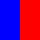 As such the previous example in IMv6 will result in: the two images being appended together first, then that result will be rotated; producing this...
If the user actually intended to do the rotations before the append, he can explicitly ask IM v6 to do it in that order.
This sort of fine control was just beyond previous versions of IM, and would
probably have required a pipeline, or intermediate save images to achieve it.
The solution to the problem, unfortunately required a drastic measure and some
incompatibility. On the other hand just about every 'simple' command that
worked in IM version 5 work as you would expect IM version 6.
In essence command line usage in versions before version 6 was ill-defined and
in my thinking broken, producing numerous odd and unexpected results.
I hope the separation of options into settings and operators is clear as it
is vital to the way IM now works.
Remember under version 6 of ImageMagick...
Let's break this down and look at what IM v6 does...
As you can see the processing of the command line in ImageMagick version 6 is
very straight forward, and logical, making the result predictable. And that is
the point...
Will produce the same result as this IM version 6 command...
The legacy command line style works, but has the same problems that plagued IM
version 5 (see Why did the command line style change
above). All settings are applied before the first read, and all the operators
are just saved away to be executed when the first image is read (and only on
the first image). There is also no guarantee of the order of multiple
operators will be the same as the order you give, though it is likely they
will be applied in that order.
Also as operators are being save up until the first image is actually read,
you may find repeating a command multiple times before reading the image may
result in some of the earlier commands 'disappearing'. This is not a bug, but
a miss-use of the legacy abilities of IM.
This style of command line is for legacy support only, and as such is
depreciated, so should be avoided if at all possible. Any scripts containing
this old style, should also be updated to do image reads before the operators
you want to apply to them.
Only those specific settings are allowed and if you attempt to use some other
setting you will get an error. For example...
The setting can be specified in a number of different ways, all of which are
perfectly valid. IM is very forgiving about this. For example a setting can
be specified in uppercase, lowercase, or any combination of the two. The
individual words (specified by uppercase letters in the "
If the string is not read from a file or input stream, then any
'
Note that the '
However this only happens for very specific cases. Any "
Or you can specifically disable this minimal 'ping' read, and force identify
to read in the image 'in total' so it gets the desired information.
Generally you do not need to worry about it too much. Unless you are dealing
with very large images such as photos.
Note that the math does not even need to be related to the image itself,
allowing you to use IM as a simple floating point calculator for use within
your scripts.
As we are only needing basic information we used the Ping
control to prevent identify from reading in the whole image. It has no effect
on the outcome in this case, but can speed up the command enormously.
You can use a Write Operator to write to
"
This can be also combined with another option, "
The main difference between "
You can see the result of the above output as a HTML Web Page showing the images.
One final word about these options. All of them by default will print to the
'standard output' of the "
Will allow you to convert, or batch modify images, without destroying the
original image. In this case converting all PNG files into JPEG files with
that same filename but a different suffix. However be warned that if there is
an existing file with the same name, it will be over-written.
So let me re-iterate...
Due to the multi-image processing capability the "
![[IM Output]](gold.gif)
![[IM Output]](tomato.gif) As you can see the size of the above images generated was determined by the
second "
As you can see the size of the above images generated was determined by the
second "Alpha Composition using "
Because "
![[IM Output]](../images/eye.gif)
![[IM Output]](../images/news.gif)
![[IM Output]](../images/storm.gif)
![[IM Output]](../images/tree.gif)

![[IM Output]](circle.gif)

![[IM Output]](mogrify_news.gif) Note that any Alpha Composition method can be used in this way, but only with
a constant 'source' or 'overlay' image being applied to all the images.
Also as "
Note that any Alpha Composition method can be used in this way, but only with
a constant 'source' or 'overlay' image being applied to all the images.
Also as "
Warning, do not include a different file suffix in the filename setting
itself. IM will not see it when deciding on the image file format to use.
Note that IM can't decide from the filename it will fall back to the original
file format that was read in, so a clear suffix, or a coder prefix can be
important, when using this technique.
To get the exact original filename the source image came from use
"
And so on.
I recommend the use of both "
Images with a palette (or boolean) transparency, such as GIF and PNG8 formats,
is displayed with a the current 'transparent color' that was used to represent
transparency in the color table. That is a generally random color may be used
(typically black) rather than the default checkerboard pattern. This could be
regarded as a bug, though technically it isn't.
However if you like display to handle such images in the same way as other
images containing transparency information, you can remove the palette
meta-data before feeding the image to "
Alternatively, just about any operation that modifies the image being
displayed will also remove the existing palette meta-data. As such some
"
This has the added bonus of cleaning up GIF animation optimizations that may
be present. Though for multiple, unrelated images it could have other
undesirable side effects.
Yes these methods are clumsy, but they work.
This method does not provide a backdrop window, menu options, or other
controls. It just simply displays the images one image at a time.
If you do want to just simple 'display' the resulting image the special
'
For JPG images you can speed up the image read by using a special
jpeg input size hint setting. See Reading JPEG
Control Options.
If the image is from a modern digital camera you can also use "
For many other examples of image tiles, and generating them see Tiled Canvases, and Background Image Examples.
If you want to use a single image for your X Windows background, you may need
to know the size of your X window display. The "
And here we use the output of "
Will display the built in "wizard" image in a backgrounded command. The
script will then wait 5 seconds before replace it with the built-in "logo"
image.
Note that if no "
I have written a script to take advantage of this method called "
For more information and examples see Really
Massive Image Handling.
It is actually rarely used as the special file format "
As you can see the "
Because the "
Parenthesis also make it possible to do something not previously possible to
do in a single "
Arrays like this were of course possible using "
The first set of parenthesis aren't strictly needed, and do add a tiny amount
of extra work to IM's internal processing, but it does make it clear what the
command is doing by separating the processing steps.
It may also be easier for image processing scripts to perform each processing
step as a separate parenthesis, as a means of separating the processing steps,
it is applying.
Note how the first "
As you can see, when the parenthesis ended, the font setting was restored to
the previous 'Candice' font, instead of the 'Gecko' font that was set within
the parenthesis.
This can be most useful when you have to change a lot of setting, for just a
short time...
![[IM Output]](cmd_settings_lots.gif)
The "
The 'plus' form of the operator, "
Or delete everything (and add a new image)...
The '
However no image will be deleted if the number of images was 24 or less. As
a result the animation will grow by one frame, every time the command is run,
until a maximim of 24 frames is reached. After that the oldest (first) frame
will be delete while a new frame is added.
As of IM v6.3.4 "
This time the "
The "
You can think if the insert index as the number of images that should appear
before the point where the image was inserted.
Of course the image that was at that index (and all the images after it), will
be bumped up into the next index position to make room for the new image.
If a negative index position is used, the insert position is calculated after
the image being inserted is removed from the end of the list. That is it
will act as if the image being inserted was not part of the original image
list. As such "
The plus form "
To do the inverse of the above (move an image to the end of the image
list), can be done by first using "
Simply put "
The plus form of this option "
Probably the most common use of this operator is to swap two images before
being used by an image layering operator such as "
As of IM v6.4 a "
The "
It is basically an ultimate Swap Operator.
This image list operator is a little different. Given an image list
number "
The 'plus' argument-less form "
As of the release of version 6.2.2 "
Of course negative indexes still behave just as you would expect. For example
to duplicate the whole image list you can specify it using numbers
'
When you use a comma separated list of indexes, the images are extracted in
that order you specify.
If the images in a range are reversed (after negative indexes are converted to
an actual image index), the extracted images is also reversed, as part of the
process.
The Clone Image Operator can be used without parenthesis, and will just copy images from the current image list and directly append them. However this is not its intended use and is to be discouraged as it will produce a different result if you later surround that set of operations by parenthesis. Also in the examples above I am generating clones and appending them to the current image list, to demonstrate the operator. In reality I should be using the Duplicate Image Operator to duplicate images in the current image list. So should you, as it will make it clearer what you are trying to do. The MPR: Image Memory Register, can also be used to clone images and was available in IM v5. It is actually still an useful method for cloning and storing a whole image list (of unknown length) for later use, and not just a single individual images as the above image list operators do.
You can use "
Note that this operator can generate hundreds of images very quickly, however
until the images are processed, the images are simply 'clones' of each other,
sharing the actual image data between them. As such duplicated images are
very memory efficent.
If more than one image is present, the last image is duplicated N times...
If you just want to duplicate the last image once, you can use the 'plus' form
of the argument.
If you want to select a particular image mutliple times duplication you can
specify image index as a second argument.
The index part of the argument can contain a list or range of image indexes to
be duplicated N times. For example duplicate the whole list twice to create
three times the original number of images...
A Patrol Cycle type of animation list is
also easy to create by using an image list that is reversed.
Note that I did not copy the whole image list, but skipped copying the very
first (
Note however that by mis-using the Color Morph
Operator the images are actually being processed, as such it takes time
for morph to actually process the images (producing no change). Also the
images created will contain actual copies of the original data, and are not
simple, memory saving clones.
Another way that seems to have become more common is use "
These techniques are continued below in the next section on Complex Image Processing and Debugging.
Each line of the magick command generates a new image, except the last line
where I just Appended all the working images
together to output the results of all the processing steps, rather than just
the final image.
This technique lets you follow what each step (wrapped in parenthesis) the
very complex command produced, and allows for easier debugging of each step in
of a process.
Note how it only uses the initial image's size and shape to generate the
initial shape of the button, so you are free to use any shape or image you
like! The rest of the command will process it just like before.
Of course you would normally Delete all the temporary
working images. That is I would replace the last line in the above with
something like this...
Other ways of checking the results is to pipe the result into the display
command, so as to view the results on screen, instead of save it to an image
file. That is, use something like this for the last line...
Alternatively instead of "
You actually don't even need the "
This type of image processing also allows for easy viewing of intermediate
images, immediately the image has been created. Basically you can insert
lines this in between "
IM will automatically continue processing once that intermediate image has
been output for display purposes. See Show, Display
Image Output.
Alternatively, by inserting this line instead, you can display all the
current images generated so far at that point in the processing...
After you have the image processing steps debugged and settled then you can
optimize the code, so that you don't use as many parenthesis steps, as well as
fewer Cloned Images, and resulting in less intermediate
images to Delete at the end.
Remember also that "Image
Composition", and or "Layer
Flattening" merges multiple images together, to leave just the one
resulting image, which can reduce the overall number of intermediate images in
memory.
Scripted 3-D bullets from
Shapes.
Also see Hints for Better ImageMagick Shell/PHP
Scripts, on ways of improving your image process scripting, both for
easier editing, understanding, and for others to be able to follow what you
have done.
On the other hand "
You can un-define the setting using "
For example here I use all the setting methods available to set the 'virtual canvas offset' or 'page' of the individual images, as I create a Animation from them...
As you can see the traditional (non-set) method is simpler when creating
multi-image list from separate image files. But "
For a more extreme example of extracting and modifying individual images in a
image list see Frame by Frame
Modification of an Animation.
Here is another example using "
You can use "
This works, but is extremely awkward and painful to use, especially when
dealing with multiple images such as an animation. In fact this is the only
way to change meta-data in images in IM version 5. (Yuck!)
 Under Construction
Under Construction

These two aspects, 'size' and 'offset' are closely related, but usually you
want to handle these aspects separately, or in a more controlled fashion. So
in addition to the normal "
Some formats like GIF and PNG save virtual canvas information, others like
JPEG do not. All of the above formats have there own limitations for virtual
canvas information. Only the internal MIFF file format does not have any such
limitations.
Note that "
Some image processing operators even return values of special interest as
image 'properties'. They are not needed by other operators, so are not stored
as a 'attribute', but are saves as a 'property' string for posible use by the
user. For example the final pointsize selected by a Best Fit Label, will be saved as a special
image property.
Here I use an identify "
Using this information to generate a new label image is trick and will be
looked at below.
One of the most useful user defined settings you can use is the
"
The above will generate an image named "
In other words 'defined artifacts' provide a way for expert users to modify
the normal or standard operation of specific operators, beyond normal argument
usage.
For example, JPEG Coder Settings, for both
Reading and Writing such images...
Image Distortion Options,
such as...
Resize Filter Controls, such as
Some artifact defines have shortcuts because they are used very regularly by
users.
For example the "
It follows then the plus form "
That is "
But as Proprieties are attached to specific
images, you can't use them in the creation of new images. For example this
will fail...
As you can see the '
So how can use you create a label using an image property or attribute? The
"
More importantally the "
Note the placement of the "
![[IM Output]](level_rounding.png) Notice the sever rounding (quantum effects) that is now visible, forming steps
in the gradients profile. As only 16 gray-level values were used, you
effectively converted the image to a color depth of only 4 bits!
Note that this type of Quantum Rounding problem becomes very common in an IM Q8
version, just by doing multiple image processing tasks, beyond a basic resize,
and cropping of images. Something that the more normal IM Q16 solves with its
extra memory usage.
Quantum Rounding only becomes a problem for IM Q16 when you use really heavy
image processing such as, Fast Fourier Transforms
(FFT) or merging of images containing different exposure times (light
intensity) to generate High Dynamic Range Images. This is after all why HDRI
was added to ImageMagick in the first place.
Burning and Clipping...
And here I 'stretch' the gradient so that the original black and white color
values go well beyond the "Quantum Range", before being restored again.
Notice the sever rounding (quantum effects) that is now visible, forming steps
in the gradients profile. As only 16 gray-level values were used, you
effectively converted the image to a color depth of only 4 bits!
Note that this type of Quantum Rounding problem becomes very common in an IM Q8
version, just by doing multiple image processing tasks, beyond a basic resize,
and cropping of images. Something that the more normal IM Q16 solves with its
extra memory usage.
Quantum Rounding only becomes a problem for IM Q16 when you use really heavy
image processing such as, Fast Fourier Transforms
(FFT) or merging of images containing different exposure times (light
intensity) to generate High Dynamic Range Images. This is after all why HDRI
was added to ImageMagick in the first place.
Burning and Clipping...
And here I 'stretch' the gradient so that the original black and white color
values go well beyond the "Quantum Range", before being restored again.
You can see that a normal IM looses the information at both ends. The lower
end values gets 'burned' as values become negative, while the upper values
become 'clipped' as they go beyond the maximum 'Quantum Range' limits of the
integers used to store the values.
HDRI version of ImageMagick result...
Repeating these two operations using a HDRI version of ImageMagick will not
produce any of the above rounding, burning, or clipping of the results, but
will have an extra cost in terms of memory (doubles need more space than
integers).
Speed wise, it does not cost much, and may actually even be faster on many of
today's modern computer hardware, due to floating point accelerators.
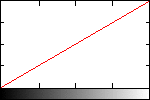
![[IM Output]](level_clipping_hdri_pf.gif) As you can see the gradient remains perfectly intact, even after heavy
compression or stretching of the image and back again.
As you can see the gradient remains perfectly intact, even after heavy
compression or stretching of the image and back again.
The use of "ImageMagick Command Line Processing
Why did the command line style change! or...
The problem with previous versions of IM
In previous major version of ImageMagick (version 5.5.7 and earlier) the
command line interface into the IM library has been prone to problems
involving the order in which operations were performed. It was very
haphazard, and confusing to anyone trying to make sense of what was actually
going on. Also, what worked one time may not work in the same order another
time, as the author of IM, constantly battled with the interface to get it
to work as people expected.
The cause of the problem was that ImageMagick followed a fairly standard UNIX
command line style...
command [options] input_image output_image
command [options] image1 [options] image2 [options] output_image
-negate", "-resize", and "-crop", etc, could appear either
before or after the image it was meant to apply to.
For example under version 5.5.7 the following two commands were equally valid
and did the same thing.
magick -negate image.gif output.gif magick image.gif -negate output.gif |
magick -size 40x20 xc:red xc:blue \
-append -rotate 90 append_rotate.gif
|
-rotate"
operator would be applied BEFORE the "-append" which is probably not
what the user intended.
With ImageMagick version 6, the operators will always be applied in the command line order as given by the user.
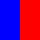 As such the previous example in IMv6 will result in: the two images being appended together first, then that result will be rotated; producing this...
If the user actually intended to do the rotations before the append, he can explicitly ask IM v6 to do it in that order.
magick -size 40x20 xc:red xc:blue \
-rotate 90 -append append_rotate_bad.gif
|
IMv6 command Syntax
Note that no 'operation' should be given, before at least one image is either read in or created. In fact you may like to consider a 'image read/create' also as an operation as well. Afetr all it really is image processing operation, that of translate an image in a file to an image in memory. So the correct way to do this in IMv6 is to read the image, process and then use the final 'implicit write' argument to write out the result. That is..command "image" { -operation }... "output_image"
command { [settings] [operation] }... "implict_write"
{...}' being repeated with as many 'reads' or
'operations' you want or need. And '[operation]' being either
an image read or create, or image processing operation that actually 'does
something'. And you would do them in the exact order you want to process the
images.
Types of Options - Operators and Settings...
A summary of the following is now also available from the ImageMagick Website on The Anatomy of the Command Line. All command line options will now fall into two basic groups: 'settings' and 'image operators'. Settings set values, Operators actually preform some action.| Setting Options | |
are command line options that only save information, that will be used
later by other 'image operators'. That is they do not do anything, except
set some value, to be used later.
Many of the options have both a '-' and a '+'
style. The latter is generally used to turn off the setting, or reset it
to its normal default state. This allow you remove the effect of a
setting quickly and simply.
For example "+gravity" will return the gravity setting to the initial
'gravity none' state.
Settings can be further divided into a number of sub-categories...
Operator Settings which control how later operators function.
They set the colors, and fonts that may be used by an operator, control
placement of images and text, the lookup of color from source images,
control the method of processing by some of the more complex operators,
etc., etc., etc..
-set" has been provided to change the meta-data of images
after they have been read into memory, or processed in some way. See Meta-Data below for more details.
Output Settings which are only used during the writing or saving of
images back to disk.
While they can be given anywhere on the command line, they are only
applied when the image is written, either as the default last image
filename argument operation, or via a "-write", or "-identify" operation.
+' form), an
appropriate default will be used. Generally this default is a saved value
from the last image read in.
A few 'operation settings' such as the current "-background" color, is
also assigned to the image, if the file format requires.
Control & Debugging Settings which control how IM, in general,
performs its tasks. These includes...
| |
| Image Operators | |
Are command line arguments that will modify the image(s) in some way.
They are performed immediately when seen, and may use other
'setting options' that have been given previously on the command line.
These operators can be grouped into a few sub-categories...
Image Creation Operators which will read images from a file or
pipeline, or generate new images. These include...
-size", which hints
at the size of the image you want to create, or setting that define or
override image meta-data such as "-delay", and "-page".
Simple Image Processing Operators will modify all images that have
already been read into memory. Each image is modified separately
to every other image. They include operations such as...
-crop" could generate multiple image 'tiles', or "-separate" which splits
images into separate channel images. As such you may end up with more
images in memory. But all of them only take one image at a time as input.
Note that many API's only apply the equivalent operation to just the first
image in the image list given. That is they may not loop over each image.
The "magick" and other CLI (command line interface)
commands, however apply the operator to each image in the current image
list in turn.
Multi-Image List Operators are special in that they modify the
whole current list of images as a single entity. They could replace the
whole list with a single combined image, or modify each image depending on
the other images found before or after it. They are used for alpha
composition, animation handling, color channel handling, etc...
null:' image somewhere in the current image list.
None of these operators can be used in a "mogrify" command, as that command processes a list of input
images (given at the end) as an individual images.
Image Stack Operators affects the ordering of the list of images
currently in memory. Specifically they provide special 'on the side'
processing of images. They are in many way similar to the previous Image List Operator, but they don't actual modify
the images themselves, only how they are arranged in memory.
(' and ')' may require
backslashing or quoting, to prevent any special meaning given to it by
the Command Line shell Interface (CLI).
None of these operators can be used in a "mogrify" command, as that command processes a list of input
images (given at the end) as an individual images.
Miscellaneous Special Operators are operators that do things in
either an unusual or non-standard ways (compared to the above).
-geometry"
operator is special as it is the only operator that only affects one image
(the last) in the image list, rather than affecting all of the images
in some way. It is only provided for backward compatibility and special
alpha composition requirements. See Geometry, resize just the last image for more details.
The other two "-version" and "-list" are information generating operators, and causes IM to
explicitly quit, after returning the requested information. See IM Special Controls below, for more information
on these options.
Some options could even cause the whole command to be run multiple times.
Basically they are specially handled in some strange and unusual way.
Generally these as not used except in special situations or to recover
specific global information.
| |
Settings are saved in some way for later use,
while Operators are applied immediately to the images.
This is what makes version 6 different from every previous version of IM. All
options are defined to be a 'setting' or an 'operator' and the order will
determine exactly when, and to what images, the option will be applied to.
The IM Examples Options Reference can be used
to identify what is an 'setting' and what is an 'operator'.
while Operators are applied immediately to the images.
Working Example of an IM Command
Let's take a look at an example, and how it will be processed by IM version 6.
|
![[IM Output]](result.gif)
|
| Argument | Action Performed | Images | ||||
magick
| Initialize and Create an empty 'image list' | empty seq | ||||
eye.gif
| Read in image and add to end of current image list | 1 image | ||||
news.gif
| Add a second image into list (now with two images) | 2 images | ||||
-append
| Take all images in current list, and append vertically.
All images are replaced by a single image. | 1 (merged) | ||||
storm.gif
| Add another image to the image list | 2 | ||||
tree.gif
| And another | 3 | ||||
-background skyblue
| Set a 'background color' to be used later.
No changes are made to any images. | 3 | ||||
+append
| Join all 3 images in the list horizontally
Current background color is used to fill the empty space | 1 (merged) | ||||
result.gif
| As this is last argument, an implicit
-write operation is performed with this argument.
The single image in the current list is written using the given
filename which also sets image file format to use.
| written | ||||
Legacy Command Line Style
Due to the fact that a lot of very old IM scripts out there use a command with a single image operator of the form...command -operator input_image output_image
command input_image -operator output_image
|
|
![[IM Output]](cmd_flip_postfix.gif)
|
Legacy support will continue into IM version 7, which includes a command
that allows for single-pass processing of command lines. This allows it to
actually read image processing options from script files and even
a pipeline. However a single-pass processing technique will not allow for
the saving of operators BEFORE reading an image to apply them to. In fact
the "magick" command will produce 'no image' type errors, if
you try to use an operator without an image in memory.
|
Command Line vs API
There is a couple of major differences between a command line IM, and using the Magick API's, such as PerlMagick, RMagick, PHP IMagick, and MagickWand.- Only one Active Image List
- The command line only ever has one Image List which can be worked on at any one moment. You can 'push' or save an image list temporary (see Parenthesis and MPR: Named Memory Registers). You can even 'clone' (make an efficent copy) of images from the last 'pushed' list. But you can't really work on two such lists at the same time. Other language API's on the other hand allow you to have as many separate image lists or 'wands' as you like. In fact you typically save each image as a separate wand (image list and settings) for better processing and only merge the image into a list as needed or as part of the final step. You can also work on them in any order, and store them into databases or other data structures, for sorting or later comparison. On the command line however one single image list means you can not do operations in just any order, but generally try to do things in a more logical sequence, completely finishing each image processing step as you go. Basically it means is much harder to 'go back' or to change something later, using results from one set of operations to select or modify what set of processing operations should be performed next. It is especially more difficult to merge or interleave (shuffle) two completely separate lists of images into a logical whole. However some techniques have been worked out, to allow you to do this from the command line. For example see Multi-Layer Alpha Composition of Image Lists.
- Direct Access to Pixel Data
- Again you can do some math processing and merging of pixel data from the command line, but you can't easily look up attributes, or read and modify a specific pixel or area using the command line interface. You can merge and mathematically modify pixel data of images using the special FX Image Operator, but it is generally limited to transforming whole images, and is very very slow. To make it easier many common operations developed by users using the FX operator, have now been built into IM, creating things like Color Lookup Tables, Evaluate Math Functions, and Multi Argument Functions. As well as the General Image Distortion Operator, and some special Image Composition Methods. API's can manipulate images in a much more direct manner, alowing you to DIY an unique operation much more easilly, at the full speed provided by the API language.
- Conditional Processing
- The IM command line interface cannot easilly modify images based on some image derived attribute. For example it is very hard to process images differently depending on if the image uses a light background, or a dark background. Yes you can do some limited and specific conditional actions using the FX Image Operator, or ask IM to adjust (rotate) an image's Orientation based on certain conditions, or only shrink and never enlarge when Resizing Images. But these are only handling special well known and common processing conditions. The only truly practical way do conditional processing is to use separate commands and temporary files. For an example of this see the well commented Jigsaw Script. API's on the other hand can do this type of conditional processing, while holding all the images involved in memory, ready to continue processing based on the specific conditions, as and when you need it.
- Looped Processing
- You also cannot just simply loop over images in a controlled manner, or easily modify the process based on which image in the sequnece is being handled. that is you can not simply do something different to each image based on the image 'scene' number, or the results of previous images. For example draw text at different sizes, or gradually blur an image, or generate an animation list in the one single command. Yes you can modify specific images in an image list. For example see Frame by Frame Modification of an Animation. But you must know how many images are in the image list, and 'un-roll' the loop to process each image in the list separately. The only truly practical way to loop over images from the command line is to write out the individual images as separate image files (see Writing a Multiple Images) and process them one at a time in an external scripted loop. For example see the shell script that is designed to Divide an Image Vertically. Alternatively, you can generate the images using a shell script loop, and pipe the result into a final command to merge them into the final image or image sequnece. For example of this see Layered Images Examples, or the various Warped Image Animations shell script generators. API's however have no problem with looping over multiple images, either in a single image list, or even multiple image lists, or even with a whole array or data structure of image lists. It can also hold all the images in memory ready for the final combining step, without pipelining, or using temporary files.
conjure" program (see below) was
originally designed to allow better scripted use of ImageMagick, allowing the
use of multiple image lists. The improvements made to IM v6
"magick" has seen this experimental API fall into disuse, though
it is still available and still being developed.
Argument Handling
Beyond the filenames and options on the command line there are only a few basic styles of option arguments that are used.- Constant Names (for specific settings and method types)
- List of Contant Names (for example two colors, or Channels)
- Geometry Argument (a special formated list of numbers with flags)
- Floating Point Lists (sometimes with Percent Escapes)
- Free Form Text Strings (with Percent Escapes)
Constant Names
Constant Names are specific string constants that are used to look up an internal library of allowed settings that may be used by an option. For example, the "-gravity" setting can take any of nine different settings. Once
set that setting is then be used by all the image processing operators that
follow the setting on the command line. For example: settings such as
'North', 'East', or 'NorthEast'.
You can get a list of all valid settings by using the List
Operational Option (see below). For example using the command...
magick -list gravity |
|
![[IM Text]](gravity_error.txt.gif)
|
-list" output) can have extra
spaces, hyphens, or underscores included, and which are then simply ignored
(but only between words).
Consequently all the follow arguments are valid to set "North East"
"-gravity"...
-
'
NorthEast', 'northeast', 'NORTHEAST', 'NorTheAst', 'north east', 'north-EAST', 'NORTH_EAST', 'North East', '___North___East___'.
Nor The Ast' is not valid, even though the
letters are all correct, as it uses spaces within the declared words of the
setting.
These constant names are not just for settings, but also to declare the
operational method to use in some of the more complex image processing
operators, such as "-layers", "-distort", and "-morphology".
Some of the constant names are read from external configuration files. For
example, color names such as for "-fill", "-stroke", "-background" and "-mattecolor". Or the special 'threshold' maps used for "-ordered-dither". Again
"-list" can be used to
look up what names your currently installed version of IM knows about.
Constant Name List
This is a little used argument and is most commonly used in settings that need one or two colors, such as Level Adjustment by Color. The "-level-colors" option can take any of the following argument
styles.
color color1,color2 color1-color2
-2-1' means take the second last
image (index '-2'), to the second image (index '1').
And yes this actually means take the images in the reverse order specified!
Another option that makes heavy use of this is Channel Selection where you can specify
a list of specifically named channels. For example:
'Red,Green,Blue,Black,Alpha'. However the Channel Setting can also use a shorthand
using a string of single letters (Eg: 'RGBA')
Geometry Arguments
This is the most common form of option argument, and is typically used to specify sizes, rectangles, and offsets for various operations. But it is also used by any option that needs any list of 1 to 5 numbers, whether they are integers, or floating point. For example, options such as "-crop", and "-resize" will use the full syntax of a geometry argument, while
others like "-border",
"-level", and "-gamma", may only use a small part
of the full geometry syntax.
This type of argument is so common that a special (and complex) parser has
been written to magick such string arguments to numbers and flags, for use by
any operator that needs a geometry argument.
A geometry argument basically allows an user to specify a single string
argument containing up to 5 floating point values (though most operators only
use integers). All the following string forms are understood the geometry
argument parser...
WxH+X+Y WxH +X+Y
A A/B/C A,B,C,D,E
+X+Y" is always decoded as a 3rd and 4th
numbers while it flags that the 1st and 2rd are undefined (or zero).
The last few forms will allow up to a maximum of 5 posible input values, and
are typically used for specifying a value for each of the standard RGBKA
image channels.
On top of these numbers, the parser also reports if any special 'flag'
characters are present (any of '%', '^',
'!', '<', '>' ).
The Parser however only reports if the characters is present. It does not
report where they were found in the argument. IM for example does not
remember that '% was attached to a specific number. It also does
not report if it appears multiple times either.
This means that a geometry argument of '%50' has exactly the same
meaning as '50%' though the latter is preferred for readability.
Also '50%x30' will probably actually mean '50%x30%'
and NOT 50% of the images width, and 30 pixels high as you might think.
As a geometry arguments can contain special '%' flags, you
currently can not use Percent Escapes to set its
values based on image attributes.
There is a Future Proposal about
exactly when a percent escape will be expanded that could fix this problem
with geometry arguments. And hopefull will be part of IMv7.
|
Floating Point Lists
If more than 5 floating point numbers are needed, perhaps even an unknown number of values, then a Floating Point List argument, is used, though at the moment these are generally parsed by individual options, as they can vary slightly from option to option. Generally they consist of a string (typically quoted) of comma or space separated floating point numbers. The Distort Operator is probably the most well known operator to use a list of floating point numbers. Others include User Defined Morphology and Convolution Kernels, though it also has extra syntax specific to defining an array of numbers (kernels). One variant of floating point numbers is used by "-sparse-color", allowing
you to substitute colors for some floating point values. Internally these are
still converted to floating point values when the resulting array is passed
into the core library function.
Freeform Strings
Other options just take a string as an argument. Either for generating labels, annotating text, or saving as image meta-data. These will typically include Percent Escapes in the string which are replaced (substituted) at some point before the string is used. It may be an immediate substitution, or the substitution may be performed later, just before the arguemnt is actually used. (See Delayed Percent Escapes below.Arguments with Percent Escapes
Because of their nature, either of last two types of arguments are often pre-processed so as to expand Image Property Percent Escape within the string. That means that specific sequences of characters will be expanded (string replaced or substituted) into some other string, or value that is looked up or calculated from the image(s) being processed. This typically is done just before the argument is actually applied by the operator to a specific image, so that settings specific to that image can be used. If percent escapes are allowed in an argument, you can instead prefix the argument with a '@' so that the whole argument is instead read
from the given external file (or standard input). For example
'@filename' will be replaced with the contents of the file
'filename'. If this happens, no percent or other special
escapes is applied. That is string read from the file will be taken as
literal, and used without modification.
WARNING: that file could be anything, including system and password files
that may be readable by the program. As such web users should pre-check
input strings for this special case, or better still feed that string to IM
using the '@filename' clause, as a security measure.
|
\n' strings are replaced with a 'newline' character, and any
'%' prefixed label is replaced with the appropriate value. See
Image Property Percent
Escapes for the complete list of replacements.
The use of Percent Escapes in arguments, means that for growing list of
operators that allow the use of such escapes, such as "-set","-sparse-color", "-distort", or "-morphology", you can
generate arguments based in various image attributes and meta-data.
ImageMagick version 7 allows the use of Percent Escapes in just about EVERY
argument, (a key feature of IMv7!).
Not only that but you can even calculate different arguments depending in the
content or index of the image! You can even pre-calculate some complex
settings using per-image or predefined global settings.
Before IM v6.6.9-0 Percent Escapes and more specifically FX Percent Escapes involving image
indexes, such as '%p', '%n',
'%[fx:t]' and '%[fx:n]' were broken. Typically
they would only return unhelpful values of either '0' or
'1', and not the actual index and number of images in the
current image list.
|
Delayed Percent Escapes
Note that for some setting options Percent Escapes are not be expanded immediately they are seen, but simply stored AS given. It is only later when the text is actually used, that any Percent Escapes found in the string should be expanded, when the image they will be used with are finally known. That is these arguments must delay the substitution of Percent Escapes until the argument is actually used. These options include the Input Settings such as: "-label", "-comment", as well as
the "-format" setting,
and global "-define"
values.
This means you can specify a "-label" containing image specific Percent Escapes long
before the image it is to be applied to is actually read in. Only when the
label is actually attached to the image (just after it is read in) is the Percent Escapes expanded,
so that it can make use of the attributes of the image to which it is being
applied.
| The major limitation to the more wide spread use of Percent Escapes is that it is currently only applied to a limited set of option arguments. For example we currently can not use them with Geometry Arguments, which also use 'percent' characters, but for a different purpose. This problem is one of the major problems that IMv7 will be fixing. |
ImageMagick Commands
While the bulk of these ImageMagick example pages use the "magick" command to process images, there are a number of other
ImageMagick commands, which I'll briefly introduce here.
Some of these commands however can not be demonstrated properly on a web page.
However I will try to give you hints and tips involving those commands here,
even if I can't actually show their output directly, here.
Convert -- Convert and Modify Images
The "magick" command is the main workhorse of ImageMagick, and
as such just about every set of examples in these pages uses this command. As
such I will not cover the use of this command much here, but look at a little
history instead.
The commands original purpose when IM was first created was for the conversion
of images in one image format into another. In fact it is still used for this
purpose, and why it is called "magick".
Because of this the command may not even read an image into memory, but may
use secondary Delegate programs outside IM
proper to do the conversion directly. This completely external aspect however
has fallen into disuse over time, and lack of need, except as a means of
reading in and writing out complex images file formats.
Over a long period of time some extra image processing features was added to
make minor changes to images as they were transferred between formats, or even
the same format. These were generally simple options, but as of IM version
5 the use of these processing features had become extensive, and a far more
important aspect to the "magick" command than just image
conversion.
As options multiplied, multiple options started to be used, the order of the
options started producing weird and uncontrollable results. To users IM
became known as unstable and uncontrollable when multiple image processing
options was used, and it started to fall into disfavor.
IM version 6 saw the switch from a simple 'options' style, to a 'do it as you
see it' style for image processing, and as a result, image processing
abilities become stable, predictable and IM's command line abilities became
many orders of magnitude more useful.
As a result of this, "magick", is no longer so much about
'converting' images from one format to another, but as a command line API for
accessing image processing functions, to create, and modify images in very
complex ways, without needing a degree in image processing, or programming in
a computer language (such as Perl, PHP, or C). Of course some shell scripting
knowledge is helpful, though not strictly required.
identify -- Print the details of images, that IM sees
The "identify" command is designed to return information about an image in a simple and useful way. By default it outputs a simple compact summary, detailing the images name, file format, image size, virtual canvas size and offset, color depth, internal format type, and if known the original size of the image on disk in human terms. For example... |
| 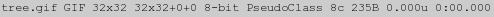 |
8c' in the above result is not the number of colors
within this image (which is actually 6), but the 'pseudo-color' palette
size (see later example for actual number of colors). Also note that the image
'virtual canvas' is the same size as the actual image with a zero offset,
meaning it is currently not being used.
Adding a -verbose, Operational Control, will produce as much information about the image
that IM knows about or can easily calculate. This includes color statistics,
color counts, profile information, internal image save type of the image, etc.
etc.. However be warned that the output really is... verbose!
Specific information can be obtained and output in specific ways by using the
"-format" setting, and
IM special percent ('%') escapes to output Image Properties.
However typically you need to specify an EOL (newline under UNIX or MacOSX)
as part of that argument (changed in IM v6.8.5-8).
For example you can just extract a count of the number of colors within an
image.
|
![[IM Text]](identify_colors.txt.gif)
|
Before IM v6.8.5-8 "-format" would automatically add an end-of-line character(s)
to the output, so as to separate multiple image results. This is no longer
done, so you may need to add your own appropriate EOL characters to the
"-format" string.
|
Identify, to Ping or not to Ping
IM "magick identify" by default only reads
minimal basic information about an image, using a technique know as "-ping". This means identify only
reads enough of the image file to determine simple image information, such as
size, without trying to read the whole image into memory.
See Ping, Operational Control below.
This is a big advantage of "magick identify" has over "magick".
However, most image meta-data will not be available. For example, image labels
from a PNG image file. For example, here I create an image with a 'label', and
attempt to use a simple format setting to print out that label.
|
![[IM Output]](rose.png)
|
![[IM Text]](identify_ping.txt.gif)
|
-format" that has more complex
escapes will automatically disable the use of a minimal 'ping' read.
|
![[IM Text]](identify_no_ping.txt.gif)
|
|
| 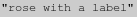 |
Identify as a floating point Calculator
You can do some floating point mathematics using FX Escape Expressions... |
| 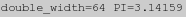 |
Extra Cavats about Identify
- Specific Format Details
- Normally IM reads in the image into memory (which is essentially into own
internal data format), using various image library APIs and delegate
programs, before outputting the results it sees using identify. That is
"
identify" analyzes the image/data content it has read in and stored. It does not analyze how the specific file format stores or handles the image data. This is important as there can be very specific aspects of specific file formats that "identify" will not report on. For example while it lists the contents of a GIF image color table for each image present (multiple images are possible), it will not tell you if all the images in the file share the same color table or not. If you need specific info about specific image file format, it may be better to use a tool designed specifically for that format. For example "giftrans" for the GIF file format, and "jpegtrans" for the JPEG file format. - Color Histogram Output
- Note that if image has more that 1024 colors, no histogram or color tables
will be included in the verbose output. To force the generation of this
information you can use the special '
histogram:' file format which includes everything as a large image comment. - Exit Status
- The identify program returns a non-zero exit status if a corrupted image
is encountered and you add a Regard Warnings
Control.
error=`magick identify -regard-warnings image 2>&1 >/dev/null;` if [ $? -eq 0 ]; then echo "The image is good" else echo "The image is corrupt or unknown format" echo "$error" fi
Identify Output Alternatives
As of IM v6.2.4 you can also produce identify output from the "convert" command using the special "info:" output file format.
|
![[IM Text]](output_info.txt.gif)
|
info:" in the middle of a sequence
of operations, say as a debugging tool. You can also have it write that output
to a specific file (or file stream).
A simplier method would be to use an "-identify" option to write to
the normal 'standard output'.
|
| 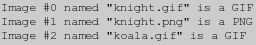 |
-print" to output other
information.
|
| 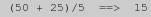 |
-identify" and "-print", is that first will be run once for every image in memory,
while the later will only run once.
That means we can generate just about any text file we want about the images
in memory, completely from within a single ImageMagick command.
For example, here I generate a HTML file of same set of images I have used in
the previous example...
|
| 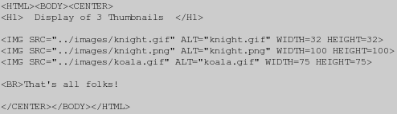 |
magick" command. You can not
specifically output to some other 'pipeline' or to a specific file, unless you
previously re-directed 'standard output'.
Writing the output using "info:"
will let you direct the output to a specific file, just like you can to an
image file. You can also direct the output to a previously prepared file
descriptor, using the special "fd:"
output file format. Of course that writes once per image, so some juggling of
images may be needed to arrange for it to output once only.
Mogrify -- in-place batch processing
The "mogrify" command is in many ways like "magick"
except it is designed to modify images in place. That is it's primary
purpose is to read images (or animations), one file at a time, and modify
them, before save the image back into the exact same filename the image
was read from. Because of this...
Mogrify is dangerous, as it can easily destroy the original image!
As such, before you do anything final, test "mogrify" with
a separate copy of your images. Do not do use it on an original image that
has no backup.
Now while "mogrify" normally saves a modified image into the same
filename, it has two special options which allows it to save images into
a different file.
The "mogrify" specific setting "-format", defines a different
format and suffix to use when saving files.
As such a command like...
mogrify -format jpg *.png |
Think and check before you Mogrify
or you may find you just overwrote something you wanted to keep.
As of IM v6.2.0 you can also use a new "-path" option to specify a
different directory in which to output the processed images. This makes it
safer, however it will still overwrite any images of the same name that may
already be in that directory. Also any old images that was left in that
directory will not be removed.
As such you can have IM save the results (say image thumbnails) into
an existing sub-directory, using something like this...
mogrify -path thumbnail-directory -thumbnail 100x100 * |
Before IM v6.3.4-3 the "-format" and "-path" settings were mutually exclusive. From that version
you can change formats and output directory location.
|
mogrify"
command can not use any of the Multi-Image List
Operators or Image Stack Operators.
That means you can not use image processing operators like "-fx", "+swap", "-composite", "-append", "-flatten", and "-layers" in
a "mogrify" command.
As some setting options are needed to be set before the first image is read in
(for example (for example "-size", "-label" and "-density"), these options are processed and set before the first
image is read in. After this each image is read in and the operators applied
to them in command line order before the image is saved and the next image
read in.
It is important to keep this in mind as if you change one of these settings
later in the sequence you can make IM forget a previous setting.
For example..
|
-size" input
setting with the first larger setting being ignored completely. On the other
hand the operational setting "-font" is set correctly for each of the individul "-annotate" operations.
This added complexity means that it is probably a good idea to...
Mogrify images simply.
Do not attempt to do very long and complex "magick"-like
operations in a batch operation using "mogrify", it will probably
have 'setting' issues. If you are really wanting to do complex processing,
write a shell/dos/perl script to use "magick" to process each
image one at a time, or go to an ImageMagick API interface.
For examples of modifying lots of images using a script see Advanced ImageMagick Examples.
Just remember, "mogrify" is a dangerous command, and should
always be thoroughly tested on backup images, before putting into production.
Actually I also recommend that scripts include a quick 'tests' on things like
"mogrify" to make sure the command does not break anything (due
to version changes or differences in computer installations) before processing
a very large collection of images. That is do a small 'test case' and abort if
it fails to produce a correct, before proceeding.
This is actually a good idea for any large scale image processing project, so
as to protect users from unforeseen consequences. I do this myself in IM
Examples, and it has saved me a lot of trouble.
Alpha Composition using "mogrify"
Because "mogrify" can not use Multi-Image List Operators it can not easily overlay thing like
logos, or mask images using Alpha
Composition.
There is one exception to this, using "-draw" to perform image alpha composition. This allows you to
specify the second image, as part of the operators arguments, outside of the
current image list.
For example, here I first make a copy of the original images I want to process
using a special "cp_perl" script. I then create temporary circle 'mask' image,
which I then use to cut out a circle shape from all those images, using
"mogrify" with a 'Dst_In' alpha composition method.
|
mogrify" will be reading the 'source' image multiple
times, I suggest you use the special IM specific "MPC:" file format to reduce the overhead of decoding the image when
reading it over and over. This image file format does not need to be parsed
by IM as it will be mapped directly from disk into memory (for the same
machine it was created on). This saves a lot of processing time, especially
in dealing with a large number of images.
Using Convert Instead of Morgify
Using a special technique to modify the output filename using Percent Escapes, (see Filename Percent Escapes), you can replace "mogrify" with a more versatile "convert" command.
Not only that but it will provide you with a more control of the final
destination name of the image. and let you better handle multi-image
processing such as compositions and animations.
For example here I create thumbnails of images in the current directory,
inserting a "_tn" string into the input filename, to create the
appropraite output image filename.
magick *.jpg -thumbnail 120x90 \
-set filename:fname '%t_tn' +adjoin '%[filename:fname].gif'
|
%i", "%d/%f" or "%d/%t.%e". Of course
these all have the filename suffix, in the filename setting, whch IM does not
use, but that should be okay as it is the same image file format.
The real problem with using "convert"
instead of "mogrify" is that ALL the
images are read into memory first! Mogrify takes great pains to only
read/modify/write one file (though that file could contain multiple images) at
a time. But "convert" does not. As such
you can very easily exceed memory limits if you are not careful. Though there
are ways around this. See examples in Read
Modifiers and Thumbnails.
Also as all the images are in memory as a single image list, you will need
to be careful on how you process those images. For example you can not
directly use Alpha Composition as you
normally would, but may need to use the specialised Multi-Image List Composition to do the
job.
Of course just as with "mogrify" this method of using
"magick" can be dangerous, as it could easily overwrite and
destroy the original image files.
Batch Processing Alternatives
If batch processing images using "mogrify" is not practical,
especially if you are copying the images rather than modifying them in place,
then it may be better to use some other non-IM looping solutions. These
include...
# Use a simple shell loop, to process each of the images.
mkdir thumbnails
for f in *.jpg
do magick $f -thumbnail 200x90 thumbnails/$f.gif
done
# Use find to substitute filenames into a 'convert' command.
# This also provides the ability to recurse though directories by removing
# the -prune option, as well as doing other file checks (like image type,
# or the disk space used by an image).
find * -prune -name '*.jpg' \
-exec magick '{}' -thumbnail 200x90 thumbnails/'{}'.gif \;
# Use xargs -- with a shell wrapper to put the argument into a variable
# This can be combined with either "find" or "ls" to list filenames.
ls *.jpg | xargs -n1 sh -c 'magick $0 -thumbnail 200x90 thumbnails/$0.gif'
# An alternative method on linux (rather than plain unix)
# This does not need a shell to handle the argument.
ls *.jpg | xargs -r -I FILE magick FILE -thumbnail 200x90 FILE_thumb.gif
|
find" and "xargs"
for doing recursive or even non-recursive
file processing. Read their man pages. For a quick introduction see this IM Discussion Post, as well as
the guide Xargs - Wikipedia
which includes information on the dangers involved.
If your commands start to get more complicated than this, it may be time to go
to a shell script, or API program, to read in multiple images, gather
information, calculate appropriate arguments, and process the images.
I also recommend a good look at the "parallel" command
(typically a drop in replacement for "xargs"). This can not only
let you run multiple commands simultaneously, but can with a little work run
each command on different computers, allowing you to do network distributed
processing of a very large number of tasks.
For Windows Users I refer you to the Windows Usage
section, and in particular Windows, Batch
Processing Several Files.
Remember "mogrify", and all other IM
commands will also expand all filenames containing shell meta-characters
such as '*' and '?'. This is done to allow the use of these meta-characters
on the old DOS command line shell. However this could cause a bug, repeated
mogrify execution, or possibly even a 'hack' from a some evil source that
provided the filename to use. Caution and complete understanding of
security issues is advised.
|
Composite -- overlaying images in special ways
The "composite" command is designed specifically for simple alpha
compositing (overlaying) of two images together in various ways. This
includes limiting the area in which images are combined together, though the
use of a third masking image.
Unlike "magick" the "composite" command is a very
traditional command in that it will read all its options and settings, before
it actually performs the single image processing operation it was designed to
do.
The "composite" command also provides simple access to some
of the more complex alpha composition modes. For example "-dissolve", "-blend", and "-watermark" image composition.
If any of these arguments are given, they will override any other "-compose" setting that was (or
will be) given for that command.
Note also that the "-tile"
setting also works differently to that of either "magick" or
"montage" and "display". In "composite"
this will cause the overlaid image to be tiled across the whole of the
background image. Something not yet available in other IM commands.
While these special features makes "composite" an useful command,
the alpha compositing is now also available for use in the
"magick" command. (For details see Alpha Composition in IM).
For a summary of multiple different ways of overlaying two or more images
together see the examples in Compostion of
Mutliple Pairs of Images.
For more information on the method by which two images can be merged together
see the Alpha Compositing examples page.
The overlay limiting or 'Masking' abilities is also detailed in the above
examples page in Using a Compose Mask to Limit the
Composed Area.
Montage -- generating arrays of thumbnails
The special IM image indexing command "montage" also followed the
same 'do it as you see it' style of command line structure, as
"magick".
The only difference is that when the end of the command is reached (other that
the final output image filename argument), "montage" will start to
process the image list into a thumbnail image index page(s), according to
the settings that are currently set.
This makes "montage" much more versatile than it was in IM
version 5, as you can now process the images just as you would in
"magick", then set all the "montage" settings you
want, and let it finish the job.
For more details about "montage" see Montage, Arrays of Thumbnails.
display -- Slideshows of Images
The "display" program is designed to display an image, or list
of images in the form of a looped slideshow. It is not designed for a
carefully orchestrated and timed animation of images, for that use the
"animate" command.
Each image will be displayed in a window sized appropriately for the image,
unless other options (like window "-geometry", see below) override this behaviour. The image will
also generally be displayed on a checkerboard background so as to show the
effects of any transparency the image may have (see below).
Remember this is NOT designed for the display of an animation, but as
a slideshow of actual images. As such some caution may be needed when using
display in a scripting program.
Image Display Time, Loop, and other options
By default a delay of approximately 2 seconds is used on top of whatever delay
the user specifies using the "-delay" setting. However you can make it wait for user input
(spacebar) by using the option "-delay 0".
However defaults can be overridden by the images themselves, depending on
there file format. As such animation formats like GIF and MIFF could result in either
a pause, or a 2 second plus the images meta-data delay setting. It is thus
recommended that you always set a "-delay" as appropriate (remember "-delay 5x1" will
delay 5+2 or about 7 seconds) for your script and needs.
The same goes for the "-loop" setting. By default "display" loops forever
("-loop 0") but image formats like MIFF or GIF can override this so as to
cause it to exit after last image in the loop. See the "-loop" option appropriately for
your situation.
Note that "display" will not handle any GIF Animation Settings so frames are not
disposed of, and virtual canvas sizes and offsets are ignored. In other words
you will see the raw partial images in a GIF animation, not the correctly
overlaid image. It does provide a "-coalesce" option to clean up
such animations for display purposes.
Transparency Handling
Images containing a full alpha channel (EG PNG and MIFF formats) will be overlaid onto a 'checkerboard' background pattern, so as to let you see the effects of any semi-transparency, such as shadow effects. You can change that by selecting a different background with "-texture" such as...
display -texture granite: test.png display -texture xc:black test.png |
display" using the
following commands to change the internal style for the image output format.
magick image.gif -type truecolormatte miff:- | display - |
display" options can be used to remove the palette. For example
using "-coalesce".
display -coalesce image.gif |
Display Using Convert
An alternative display method (other than using "animate", see
next) is to use the simpler "x:" output image format (See display output format).
magick image.png x: |
show:' or 'win:' output Spawning Delegate will do the same thing
by runing the "display" command on the
output image, and exiting without waiting for that window to be closed.
magick image.png show: |
Display Output Size
Display will not scale an image to fit it to the X window display. The window size will be adjusted to fit each image, unless set using the "-geometry" setting. That
setting can also be used to fix the windows position on the X window display.
Images which are larger that the screen, will also not be resized, but
will overflow the screen, display will however also provide a 'scroll
window' to let the user slide around the image.
This can be painful when viewing a modern high resolution digital photo.
To limit display to say a 800x600 pixel area (only resize smaller, never
larger), use...
display -resize 800x600\> photo.jpg |
display -define jpeg:size=1600x1200 -thumbnail 800x600\> photo.jpg |
-auto-orient" to correct the
camera rotation of the displayed image, using the EXIF meta-data in the image
file format.
If you don't want menus, you can turn them off using the "-immutable" setting to
"display", so it knows not to allow editing.
Scripted use of Display
With these options in mind, the following is my recommendation for using "display" to display results from a complex shell script...
display -delay 0 -loop 1 -coalesce -resize 800x600\> some_random_image |
Display with X Windows
The option "-window root"
can be used to display an image on the X window background (root) window. In
this case the "display" program automatically exits.
By default an image is tiled across the background. For example try this..
display -window root pattern:checkerboard |
xdpyinfo" program
while not part of ImageMagick, can give you that information.
xdpyinfo | grep dimensions: |
xdpyinfo", to resize an image to
fill the X window background completely.
screen_size=`xdpyinfo | sed '/dimensions:/!d;s/^[^0-9]*//;s/ pixels.*//'` display -resize $screen_size! -window root photo.jpg |
Display Remote Control
Display does provide a special "-remote" option. This will look for an already running
"display" command and will then pass the given arguments to it.
For example...
display wizard: & sleep 5 display -remote logo: & |
display" command is running, the current command
will open a window and not exit. As such you should also background the
"display -remote" commands as a precaution.
At this time you can not request a remote "display" to exit. As
such the best way to close the remote display is to either kill the running
process, or 'delete' the display window using some X window command.
For example (using the non-IM command "xdotool")...
xdotool search -class "display" windowkill |
animate -- Show an animation of images
In many ways "animate" and "display" are extremely similar.
However "display" only shows the images
in the given image file 'as-is' without change, adding an minimal 2 second
pause between each frame for user input.
"animate" on the other hand will apply any GIF Animation Settings that are saved
with the image, and only display each image according to its 'time delay'
settings, looping back to the start to repeat the animation. In other words
"animate" 'animates' animation formats properly where "display" does not.
However because of this, the virtual canvas of the first image will control
the output image size, and other image will be overlaid into that image area.
Of course as the images are animated, you do have a fine control of the image
display timing, using options such as "-delay". The command also has an
extra argument "-pause"
to add an extra pause at the end of the animation loop, beyond whatever the
final frames "-delay"
setting specifies.
For example you can use "animate" to generate a Flicker Comparison of two very similar images,
using something like..
magick image1.png image2.png -scale 400% miff:- |\
animate -delay 50 -loop 0 -
|
flicker_cmp", and find it extremely
useful to pickup very subtle changes in pixel intensity that I would otherwise
miss.
compare -- Look for Differences
All current information on this is on the Image Comparison Page section of IM Examples.stream -- pipeline processing of massive images
"stream" is a special program that is designed to handle
extracting a portion of a very large image file. It is the only such program
within ImageMagick, all others read the images completely into memory before
processing (the exception is JPEG images via the "-size", as this option is passed to
the JPEG delegate library).
You can select a portion of the image with the "-extract" setting. And you can
specify the depth of the raw bytes with "-depth" setting. And finally, you
can select which color channels to extract using the "-channel" option.
However "stream" will only output the raw color bytes of the
image (RAW format) as defined by the image depth, as such you may need to pipe
the output of the extracted segment into convert.
For example...
|
import -- read images from the on screen display
The "import" command is a special program that can be used to
grab and extract images from an X windows display.
For example lets get it to grab and print a window you select from your
display...
import -page A4 -gravity center ps:- | lpr |
X:" also provides exactly the same functionality
from within the magick command.
The only difference between the two is that "import" has more X
window specific settings than the "X:"
format, such as specifying the display, screen, and/or window ID, the image is
to be grabbed from.
Other options include controls display 'beeping' and repeated snapshots.
If no specific window is specified, the mouse can be used to select what parts
of the display the user wants to grab as an image.
- If a single mouse click is used the whole window clicked in is grabbed and returned as an image. Note that if any other windows on the display is obscuring part of the window selected, then you will grab an image of the obscuring other windows are obscuring the selected window being grabbed.
- A click in the root window, or selecting "
-window root" will return the whole screen. - If a mouse click and drag is used a Cropped section of the whole screen is returned, which of course also means the location (virtual canvas offset) on the whole display (virtual canvas, or page, size) is also returned.
xwininfo". You can also cut down the area of the selected window
using "-extract".
See also the special input format, "X:" as an alternative to using "import".
Note to import from the Windows clipboard use
magick clipboard:myimage image.png
and not "import"
conjure -- IM experimental scripting language
Was originally designed to allow scripted Imagemagick use, with the use of multiple image lists, but the improvements made to IM v6 "magick" has seen this experimental API fall into disuse.
It is an XML based language. Though if you want XML, SVG may be
better for your needs.
In my opinion, using the "conjure" script is probably better and
easier when dealing with multi-image list. And is being used, though not very
widely, due to lack of examples and support by users.
Image Lists...
One of the most important points to remember with ImageMagick, and one that confuses both new users and experienced users, is that...
ImageMagick works with Ordered Lists of Images, not single images
That is IM deals not with just one image, but potentially an ordered list of
images, be they separate individual images, a set of images that layer on top
of each other, or the frames of an animation.
Also in general all image operators will be applied to all the images in
the current list.
As such if you use a "-draw" operator, it will not only draw on the last image in the
list, as many new users would assume, but it will draw onto all the
other images in the current image list, and does so to each image in turn.
Image Layering Operators, such as "-coalesce" and "-layers" will replace each image in the list with a new image
modified according to the other images in the list. It may even add or
remove extra images!
Also Image List Operators, like "-append", "-mosaic", and "-fx", will replace ALL the images in the current image list
with the resulting combined image. That is it will destroy all the images,
unless they were previously saved using Parenthesis, and Cloned Images were used. See Image List Operators below for practical examples.
Finally when a new image is read in or created, IM only adds that new image to
the end of the current image list (which always exists). Some formats
(like GIF) may actually add multiple images to
the current image list, unless a special Indexing Read Modifier is added to the input filename, to limit what is
read in.
When saving images, IM will save the whole image list that is in memory at
the time of writing. If image format allows it IM will write ALL the images
into a single file. If the format does NOT allow multiple images (for example
JPEG), it will write the images into separate files (See Writing a Multiple Images).
Parenthesis -- processing images 'on-the-side'
With the formalization of the command line options, the processing order is now exactly predictable, and it has also become possible to add parenthesis (or brackets) to the image processing. This has been a desired feature by IM users for a long time, and allows you to do things never before possible in a single command. The opening bracket '(' will in affect start a new image
list, that all enclosed operators will work on. The matching close bracket
')' will then add the resulting image list (which may be more
than one image, or none at all) to the end of the previous image list.
In other words, using parenthesis means...
"I need to do a bit of work in a separate image list
before adding the results to the end of previous list."
It allows you to work on a sub-set of images, like a scratch pad, than add the
result back into the main image list without affecting the images you have
already previously read in or have been working on.
Let's look at some simple examples...
before adding the results to the end of previous list."
|
![[IM Output]](cmd_negate.gif)
|
-negate" operator, color negated both images, as both were in the
current image list in memory at that time.
But by adding parenthesis we can limit the negation to just the second
image...
|
storm.gif" image is read into a separate image
list to that of the first image (generated by the "(" image
list operator), it can be negated without affecting the first image. Then
we can add the result to the main image list (that is the ")"
operator), before appending the two images together as before.
Parenthesis must be given as a separate argument. That is you must separate
them from the other arguments by spaces. You can not add them hard up
against neighbouring arguments. In other words in the IM command line
argument " \(+clone " is wrong, while " \( +clone
" is correct.
Also in the last example I needed to put a backslash '\' before
the parenthesis. That is because when using IM on an UNIX (linux) machine,
parenthesis has special meaning to the command line shell. As such I need
to escape, or quote the bracket symbols, when I use them.
Windows DOS scripts do not require parenthesis to be escaped with backslash.
See Windows DOS Scripts for this and other
differences to linux scripting.
|
magick" command. Generating arrays of images!
|
![[IM Output]](cmd_array.gif)
|
montage" (see Montage Concatenation Mode), But using a
separate command makes image processing scripts more complex.
Of course if you like to make the command look more array like itself, you are
free to add some extra parenthesis.
|
![[IM Output]](cmd_array2.gif)
|
Parenthesis and Settings
Option 'settings' are not affected by parenthesis, and will continue across the parenthesis image operators, until the setting is changed or turned off.
For example...
|
![[IM Output]](cmd_settings.gif)
|
-font Candice" setting is NOT reset back to
its default setting when the parenthesis is entered, while the second
"-font Gecko" is not replaced by the original font setting when
you leave parenthesis.
In other words...
Parenthesis only create a separate Image Sequence.
They do not limit settings, only the images being worked on.
As of IM v6.4.1-4 the new operational control option "They do not limit settings, only the images being worked on.
-respect-parenthesis" can override this behaviour.
When given at the start of an IM command, it will cause parenthesis to also
save and retrieve the previous settings that have been given. That means any
settings given within parenthesis, will only remain set, until the end of the
parenthesis.
For example...
|
![[IM Output]](cmd_settings2.gif)
|
magick -respect-parenthesis \
-font Arial label:"This is a line of plain text." \
\( -font Candice -pointsize 16 -fill red -undercolor lightblue \
label:"A line using a lot of different settings." \) \
label:"Text is back to normal -- like Magick\!" \
-append cmd_settings_lots.gif
|
Image List Operators
With the stronger emphasis by IM on image sequences, especially within parenthesis, it is no surprise that a set of new image operators have been provided to manipulate the image lists.
The arguments to these operators are numbers indexing the image list,
starting with zero ('0') for the first image, and one
('1') for the second image, and so on. However if you give a
negative index, the images are referenced from the end (last image added) of
the image list. That is an index of '-1' is the last image in
the current image list (generally the last image read or created),
'-2' for the second last and so on.
-delete {index_range_list}
The "-delete" list
operator is the simplest of the image list operators, it just deletes
images from the current image list.
|
+delete" does not take an argument, and just deletes the last
image in the current image list.
The "-delete" operator
will also accept a comma separated list of numbers, or a number range to be
deleted.
|
|
![[IM Output]](seq_delete3.gif)
|
0--1' argument means delete images from first image (index
0) to the last image (index -1). In other words ALL images in the current
image list. The tree image was then added to give IM an actual result, so
as to avoid a 'no image' type error. A "NULL:" output image could also have been used, to produce no
output.
If an image index does not exist, or a number range is reversed, "-delete" will silently ignore
that specific image deletion.
For example, the argument '-25' will attempt to delete the last
25th image in the image list, but will silently do nothing if less than 25
images are present. As such you can generate a rolling animation of 24 images
using a sequence like...
|
-delete" will not delete images that result in the numbered range
being reversed.
That means that last example could be re-written like this...
|
-delete"
will delete all images between the first, to the last 25th image, leaving at
most 24 images in the list. If only 24 or less images are present, the given
range of images to be deleted will be effectively reversed, and the "-delete" operator will not delete
anything.
-insert {index}
The "-insert" operation
is sort of the opposite of "-delete". It will take the last image in the current image
list and insert so that it is positioned at the given index.
|
![[IM Output]](seq_insert.gif)
|
-insert -2" will 'roll' the last three
images, placing two images between the newly inserted image and the end of the
image list.
|
+insert"
will move the last image to the front of the image list (index
0), effectively rolling the whole image list by one frame.
|
-duplicate 1,0" to copy the
first image, then use "-delete
0" to delete the first image.
-swap {index}[,{index}]
Simply put "-swap", will
swap the positions of two images in the current image list. For example
"-swap 0,2" will swap the first and the third images in the
current image list.
|
![[IM Output]](seq_swap.gif)
|
+swap" will swap the last two images in the current image
list. In other words, it is equivalent to "-swap
-2,-1".
|
![[IM Output]](seq_swap2.gif)
|
-composite", "-flatten", "-append", or "-fx".
|
![[IM Output]](framed_tree.gif)
|
-swap"
with a single number will swap the last image with the number given. That is
"-swap 1" is equivalent to a "-swap 1,-1".
|
![[IM Output]](seq_swap3.gif)
|
-reverse
The "-reverse" operator
(added to IM v6.3.4) will quite simply reverse the order of the whole image
list.
|
-clone {index_range_list}
This image list operator is a little different. Given an image list
number "-clone" will make
a copy of an image that has been saved by the 'open bracket' or 'parenthesis'
operator. That is...
Clone should only be used within parenthesis
The reason for this is that it allows you to extract a copy of an image from
the last saved (pushed) image list, so you can process it further. For example.
|
![[IM Output]](seq_clone.gif)
|
+clone" will just make a copy of
the last image of the saved (pushed) image list so that you can process it
further
|
-clone" operator will take a comma separated list of images, or a
range of indexes of the form '{index}-{index}'.
|
0' (first image) and '-1' (last image), that is by
using the range '0--1'. It may look strange but it makes sense
and works fine.
|
![[IM Output]](seq_clone_all.gif)
|
|
|
![[IM Output]](seq_clone_reversed.gif)
|
The Clone Image Operator can be used without parenthesis, and will just copy images from the current image list and directly append them. However this is not its intended use and is to be discouraged as it will produce a different result if you later surround that set of operations by parenthesis. Also in the examples above I am generating clones and appending them to the current image list, to demonstrate the operator. In reality I should be using the Duplicate Image Operator to duplicate images in the current image list. So should you, as it will make it clearer what you are trying to do. The MPR: Image Memory Register, can also be used to clone images and was available in IM v5. It is actually still an useful method for cloning and storing a whole image list (of unknown length) for later use, and not just a single individual images as the above image list operators do.
-duplicate {count}[,{index_range}]
You can use "-duplicate" to generate an extra copies (clones) of an image, from
the current image list (added IM v6.6.8-7). The new images are added to
the end of the list.
Unlike the previous (and older) Clone Operator it does
not require the use of parenthesis.
For example to make N extra copies an image (to a total on N+1) you can do
this...
|
|
|
|
|
0) and last (-1) image, making the image
indexes -2 to 1.
If your version of IM is older than v6.6.8-7, you can still generate duplicate
images, Clone Image Operator, but only one set of images
at a time.
Or by using a technique that basically mis-uses the Color Morph Operator, generate multiple
duplicate images. The trick is to first make one clone to generate two
identical images, then use "-morph" to generate in the last N-2 images between them.
|
Combining Image Sequence Operations
Using these operators, you can extract a copy of a specific image, modify it, and return that image back where you got it from. For example, here I make a "-clone" of the 2rd image (image index '1'), rotate the images
colors from blue to red, then replace the original image with the modified one
by first "-delete" it
and "-insert" the new
one.
|
-swap" to replace the original
image, then "+delete"
the old image that is now on the end. This only requires you to give the
image position twice, instead of three times. Once to clone, and once to
replace the modified image.
|
Complex Image Processing and Debugging
Thanks to the addition of Image Sequence Operators (see above), you no longer need to process images one step at a time, saving the image and re-reading it again each time. Instead you can now simply hold the intermediate image in memory and continue processing it. This saves a lot of time, both in the converting of images to a file format, and in the actual IO to save the image to slow disk. This type of image processing commands can become very long and complex. As such it is better to write the command in scripts, and try to place each major operation on a line by itself for easier programming and editing. See Hints for Better ImageMagick Shell/PHP Scripts.
For example, here I go though a whole complex processing sequence to generate
a red button on a black background.
|
![[IM Output]](seq_process_fx.gif)
|
|
|
display" you
can use 'show:' which will display the resulting image on screen,
and then allow the original command to continue or exit. See Show, Display Image Output for more information.
|
+append", in which case IM will show each image in sequence, by
pressing 'spacebar'.
You can even get fancier by using "montage" command to view the results in a nicer way...
|
\( ... \)" statements.
|
|
![[IM Output]](seq_label.gif)
Image Meta-data: Attributes, Properties and Artifacts
So far we have look at images and the actual content or data that makes up the image. But images are more than just 'image data'. There are many attributes or meta-data that is also part of an image, and affect its image processing and how other programs should handle the image. For example an image could have an 'offset' or be part of a larger 'virtual canvas' (page). That is a single image may only be a small part larger picture, made up of a series of other images, to form 'layers' or and 'animation'. IM also attaches has a lot of special 'settings' that is used by many image processing operators to modify how they work. For example, the 'background color' to use. Some of these are global setting, which are the same across a whole list of images, while others may be different for each image within the list. So what sort of things are also part of an images? Lots of things...- Image meta-data that are typically (though not always) saved with the image in image file formats. For example: profiles, labels, captions, and comments, and virtual canvas information (page). These are all per-image settings, and can be different for each image in the current image list.
- Global settings used by many different image processing operators, but generally not save with the image: Colors such as background, bordercolor, fill, and mattecolor, also font, and pointsize, gravity, compose method, color channel handling, read/write bit depth of color values.
- Expert settings and defines, used to control the deeper lower level operation of specific image processing operators. For example: distortion viewport, special compose method arguments,
- How the image is actually to be stored in memory within ImageMagick: for example as RGB or CMYK. Whether an alpha channel is present, and enabled or not, also the palette an image might have had when read in. However some of these storage settings are hard coded at compile time (such as in memory color value Quality).
- Some general IM operational settings, such as debugging or verbose settings, typically controlling information output or error handling.
- Attributes
- These are stored as special data structure items for each image, generally so as to allow fast and direct access by the various image processing operators. For example: image size, virtual canvas geometry, background, fill, stroke, matte colors, pointsize, density, font, compose, interpolate, virtual-pixel method, profile blocks, time delay and disposal settings; and many more things. Note that some of these are 'specific' to each image, while others are treated as a 'global' setting that is set to the same value across all images by the CLI interface, even though they are still stored as part of each individual image. Attributes are typically modified using the many options, as part of the normal image processing, or more generally using Set.
- Properties
- These are a freeform set of key-value strings that are attached to each image on an individual basis. Each image can have a completely different set of strings. Essentially they are meta-data items that do not need to be accessed or decoded regularly, or are used in some special way. Typical examples of this are: label, caption, and comment strings; creation and modified dates; user defined strings; results from some operators. Users can use Set to set or change these, as long as the 'key' does not correspond to some known 'attribute'.
- Artifacts
- This is a global set of freeform strings that is common across all
images.
It is used to hold freeform global settings that define or modify the
reading and image processing of all the images. An example of which
is the "
verbose" setting that causes some operations to output general information about there actions, including more verbose identify output. Users can modify these global values using Define (see below), or with a special case of the Set, (see Using Set "Option:" to Define and Artifact).
Setting/Changing Image Attributes/Properities
Simple Meta-data are image attributes that are often have the greatest importance to image processing. So important they are decoded and made available in the image data structure to allow fast use by image processing operators. Such data is generally modified in two ways. A direct changing of the image meta-data as an image is read or created. Or as a modification of meta-data to an image that is already in memory. For example, "-label 'string'" will set the comment in
every image that is read in or created after that setting has been set.
However "-set label 'string'" will change the 'label' meta-data
of all images the current image list, already in memory.
The reason for the two methods is due to historical backward compatibility and
convenience. Basically "-label" has traditionally been set
BEFORE the image it is applied to has been read in. It only affects the
images that are read in (or created) after it has been set, or changed.
For example....
|
-set"
operator changes ALL the images that are in the current image list, including
the ones previously read in. Thus you must generally use parenthesis to limit
what image you are applying the option to, unless you want to apply it to ALL
the images read in so far.
|
+label", in which case the
label meta-data will be left alone as the image is read in or created. If the
image read in also doesn't have a label, IM will fall back to some logical
default. For label that is just the empty string.
You can see more detailed and specific examples of both methods Montage Labeling of Images which make heavy use
of this for labeling purposes.
This 'duality' of setting image meta-data, also exists for other options. This
includes... "-comment", "-caption", "-page", "-dispose", and "-delay".
The virtual canvas size and image offset setting (page) however also has
a third method, using a special operator "-repage" (see Virtual Canvas below).
For example here I use all the setting methods available to set the 'virtual canvas offset' or 'page' of the individual images, as I create a Animation from them...
| 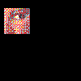 |
-set" or the specialized "-repage" operators are better
when you need to change an image that has already been read into memory, or was
created by come complex image processing methods.
For example to change the image offset of the third image (image index
'2', or the 'tree') in the last example...
|
![[IM Output]](animation_mod.gif)
|
-set" to specify a comment on all the images, and then modify one
specific image.
|
| 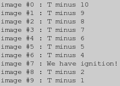 |
You can use "
mpr:", as an
alternative way of setting attributes to in memory images.
For example here we take an image with a 'Bad' comment, that is in memory,
and replace the comment with a 'Good' one...
|
![[IM Text]](comment_change.txt.gif)
|
General Global Attributes
Most of these attributes are generally set globally either before or after
reading images into memory (it makes no difference). They are typically used
as a general control of the later image processing operations.
* Many settings are simpley globally saved for use as needed
-fill -background -bordercolor -strokecolor -mattecolor -quantize
+dither -channels -size -gravity -units -density -font -pointsize
-tile
* Some settings affect the way an image is saved to disk, or the meta-data
saved with the image. This includes
-loop -compression -quality -depth
-density -background
* -compose is awkward, as it can only be set globally. But if unset
then individual images can have a different setting (for layering).
Most of these however can be turned off, (using a + version) which
causes the operator to retrieve the setting from image meta-data
(eg: +background falls back to the original images meta-data if present)
but more generally it falls back to some default value. (eg:
+gravity falls back to 'None' to mean no gravity has been set).
A few of these also get saved with images when written. Specifically
the GIF format will save an the -background and -bordercolor as part of the
images attributes, however these are normally ignored by programs which
read these images.
You may have noticed that some settings are used in multiple places.
for example -density
* used in reading in many vector format images like
Postscript, PDF, and WMF image formats.
* also in special image generators such as label: caption: and text:
* used as part of font drawing in -annotate -draw and -polaroid operators.
* And finally some formats save the density or resolution as part
of the the image file format. For example postscript wrapped raster
images, JPEG, and TIFF.
Is it any wonder then why settings can be so confusing.
Virtual Canvas, and the Page and Repage Operators
The 'page' or 'virtual canvas' settings primary purpose within IM is to define how a the 'real' part of an image, (the part that actually contains color pixel data), fits in a larger context of a 'canvas'. This is especially important when multiple images are involved and need to be positioned relative to each other for Layers of Multiple Images and in GIF Animations. It is also used, (and hence its name of the term 'page') to define where an image fits on a larger physical piece of paper or 'page', in Postscript or in generating image of a 'page' of Text. While it is most often used for Layers of Multiple Images and in GIF Animations, it is also involved with remembering the original positions of images when Cropping, and Trimming Images, as well in Multi-Image List Composition, and in General Image Distortions. Now the 'page' defines two separate parts: a 'virtual canvas' or area, defining a larger space in which the image exists, and the 'offset' or location within that 'canvas' where the actual image is positioned.| While negative 'offsets' are allowed, the 'canvas size' is limited to an area from 0,0 to the given width and height. That is only a positive canvas can be specified. |
-page" and "-set
page" methods, a separate option "-repage" has also been provided
to allow a finer control.
Specifically... - +repage
- Without and arguments, will reset the image virtual canvas to the actual image itself. That is just clear any virtual canvas information that the image may have. This often important after applying the image sub-diving operators such as Cropping, and Trimming. It is especially important in removing virtual canvas size and offsets before saving to the GIF or PNG image file formats, as many browsers use the canvas/offset information as part of the image display.
- -repage WxH
- Change the existing images virtual canvas size, but do not reset the image
position on that canvas.
Note supplying this argument to either "
-page" or "-set page" will reset the images location to '+0+0' which is probably not wanted.. - -repage +X+Y
- Just move the image on the virtual canvas to this absolute location without changing the images canvas size.
- -repage +X+Y\!
- Do a relative move of the image on the virtual canvas by adding the given numbers (positive or negative) to the images existing offset position.
- -repage 0x0
- Attempt to find the best virtual canvas size that contains the whole image. This however will fail for images with a negative offset as there is no way to specify a virtual canvas with negative components. To avoid problems it will use the size of the actual image as the smallest canvas size possible. That is it will never assign a virtual canvas with a zero dimensions.
- -repage 0x0+X+Y
- Move the images offset, then resize the virtual canvas to best fit the images new location.
- -repage 0x0+0+0
- Equivalent to a "
+repage" or "+set page" or a "-set page 0x0". All virtual canvas and offset information is removed. - -repage WxH+X+Y
- Equivalent to a "
-set page WxH+X+Y". That is just assign the given values directly.
!' flag will make the given offset a relative
displacement to the images current offset. That is a '-repage
+5+0\!" will move the images offset 5 pixels to the right, without
modifying the virtual canvas size.
It is currently not posible to directly specify a relative resize of the
virtual canvas size. However it can be done by using FX Percent Escapes. But this is not
commonly needed. One example is given in Trimming with a Specific Color.
Caution is required in giving an image a final negative offset position as the
GIF file format can not handle this, and resets it to zero if negative. Also
some browsers go crazy when given PNG images with negative offsets.
What virtual canvas information is saved with an image is format dependent.
| JPEG | Like many image file formats, JPEG images do not save virtual canvas information at all. The information is just ignored and lost. |
| GIF | The size of the virtual canvas and offsets will be saved as part of its GIF animation handling. However it will not handle negative offsets. Any negative offset will be reset to zero on save. |
| PNG |
Offsets and even negative offsets is saved, but the PNG file format does
not normally save the virtual canvas information. However PNG images
saved by IM will include the virtual canvas size information, but is only
used by other IM commands.
If IM does read a PNG image without this IM specific attribute, it will
set the image virtual canvas to an appropriate size to ensure the image is
visible on the virtual canvas (as per a "-repage 0x0"). For
images without an offset that means the virtual canvas is the same size as
the actual image.
|
-page" has
special meaning for "text:" and "ps:" image
generator operators (See Text: Multi-line Text
Files and PS: Postscript formatted Text and
Graphics). As such its normal canvas size and offset meaning are not used
during the creation of these images.
Set and Per-Image Properties
However IM can not make an option for handling every possible setting that an image can have. That would be just impossible. Not only that users often like to add or define their own settings. Because of this the "-set"
option can actually define ANY setting with ANY value.
If the setting is not a specifically known attribute of an image (to be saved
in a way to allow fast acceess by operators), it is saved into the image as
a 'Property' (an array of strings), and will be listed near the bottom
of a verbose "identify" output, or retrieved and expanded using
Percent Escapes.
The built in rose image for example automatically generates three
'properties': two date strings, and a 'signature hash'. To this I have also
added my own user defined 'property' setting.
|
![[IM Text]](properties.txt.gif)
|
| ||
|
![[IM Text]](property_label.txt.gif)
{kind=link}
{kind=link}
{kind=link}
{kind=link}
{kind=link}
{kind=link}
{kind=link}
{kind=link}
{kind=link}
{kind=link}
{kind=link}
{kind=link}
{kind=link}
{kind=link}
{kind=link}
{kind=link}
{kind=link}
{kind=link}
{kind=link}
{kind=link}
{kind=link}
{kind=link}
{kind=link}
{kind=link}
{kind=link}
{kind=link}
{kind=link}
{kind=link}
{kind=link}
| Note that the label: generator itself also sets a 'label' attribute, which happens to be saved as a property string. |
| All 'properties' are saved as a free form string data type, and stored as image meta-data. Because of this, not all 'attributes' are saved as 'properties', as many attributes need to be saved and used directly as numerical data by image processing operators. An example of this is the virtual canvas 'page' attribute. |
-format" setting to get IM to output the pointsize of the label it
created and discarded.
|
![[IM Output]](property_pointsize.txt.gif)
|
filename:" setting. For example...
magick rose: -set filename:my_area '%wx%h' 'rose-%[filename:my_area].png' |
rose-70x46.png".
Only user defined settings prefixed with the "filename:" string
can be used inside the output filename, as a security measure, though any name
can be used. For more examples of this see Filename Percent Escapes.
Define and Global Artifacts
Defined values are known as 'Artifacts' and are defined globally across all images, and are set using the special "-define" operator.
The primary purpose of such 'Artifacts' are as special settings that
can be used as extra (or out of band) settings by Image File Format
Coders, or Image Processing Operators. Basically it allows the
addition of free-form settings for specific requirements without needing to
create another 'attribute'.
Also being globally set, they are not attached to specific images, but to all
images in an Image Sequence, and are available when no images have been
read in or created yet.
| Note that API's can have multiple image list, with different sets of 'artifacts' attached, but the command line interface (CLI), only has one active image list, as such 'artifacts' really are global. |
-define jpeg:size=300x200 -define jpeg:preserve-settings=1 -define jpeg:optimize-coding=true |
-define distort:scale=2 -define distort:viewport=44x44+15+0 |
-define filter:blur=0.75 -define filter:support=1.25 |
-verbose" operational control (see below), is really equivalent to
using "-define verbose", and thus creating
a 'verbose' artifact. For example...
|
| 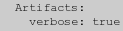 |
+verbose" just removes the 'verbose' artifact,
and is thus equivalent to "+define verbose".
Artifacts and Delayed Percent Escapes
Artifacts are also often used to hold special attributes that should be assigned to images that are read in, after the define has been given. The "-label" setting also
just sets an artifact with the argument provided by the user. This artifact is
then converted into a 'label' Setting or
Propriety after a new image has been read in or created.
For example creating a "rose:" image with a label set
|
| 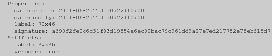 |
-label" first
defined the 'label' artifact shown. Later when the rose image
was created (and its size attributes was known), IM converted that global
artifact into an image specific 'property' and only then expanding any
Percent Escapes at
that time. This is known as a Delayed Percent
Escapes.
The same thing happens with a few other setting options, such as "-comment" and "-caption" as well.
It is because of Delayed Percent Escapes that
"-define" will only save
the strings, while the "-set" operator will do the expansion.
Using Set "option:" to Define an Artifact
We showed above how you can "-set" special purpose personal Proprieties, on a per-image bases. For example...
|
![[IM Output]](property_annotate.gif)
|
| 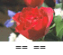 |
{kind=link}
myinfo' property was for found or included
in the appended label.
On the other hand globally defined Artifacts are
available to the image generators. They have to be so that the image
generators or image file coders can read them for various control settings.
As such as using a "-define" will work as expected.
|
![[IM Output]](artifact_append.gif)
|
-define" option does
not currently allow the use of image properities!
The trick is to use a special prefix "option:" when using the
"-set" option. This
addition causes "-set" to
define a 'artifact' with the name that follows the prefix.
For example, this is equivelent to the last example.
|
![[IM Output]](propertyoption_append.gif)
|
-set" option will expand Percent Escapes. Which
means if we have some per-image Propriety, we can
magick it to a global Artifact.
For example, here I create a label, then magick the
'label:pointsize' property the "label:" image
generator created, into a global artifact 'my_pointsize'. As an
artifact, this information is available when I create a second label image.
I then append the two labels together (with a separating 'gray'
line). A very tricky example.
|
![[IM Output]](property_append.gif)
|
-set option:..." in the above. If you
were to place it AFTER the creation of the "xc:gray" it would be
that image that would be used to set the global artifact. That is because
only the properties of the last image define the value stored in the global
artifact.
The reason is that only the last image is used to define the artifact.
Actually what realy happens is that "-set" is applied to every image in the current image list, even
though it is generating a globel artifact. As such each image will assign its
own properties into the global artifact, replacing the previously assigned
values. When finished, only the last image will have 'defined' the artifact.
| At this time the 'FX escape' has no way of reading properties or artifacts. And as such you current can not do arithmetic on such values. |
Image Type when Reading and Writing
The "-type"
operator/setting defines the style or color space to use when an image is
being read in or written out, to ensure the resulting image (in memory, or in
the image file) is what you expect it to be. As part of this, it may do some
Color Space modifications at the
time of the file I/O, though only to ensure the image is in a form that was
expected.
For example "-type" has a
special 'bilevel' setting that can be used magick and save
images as a two color monochrome image for some image formats. Similarly
'TrueColor' and 'TrueColorAlpha' can be used force a
TIFF image to be saved as a full color RGB
image even if the image is actually purely gray-scale.
Other settings include 'GrayScale' and
'GrayScaleAlpha' which will ensure the written image is
gray-scale only (without or with transparency, respectively). Or
'Palette' to force the use of an indexed color map in formats that
support this option.
During reading of image file formats, a "-type" setting of
'TrueColorAlpha' will force a JPEG image being read, to have a 'Alpha' channel added to its
in memory storage, even though the JPEG format
itself can not handle transparency.
When writing to a PNG file format
setting a "-type" of
'Pallette' will force it to use a color indexed
"PNG8' internal image format. Simularly using
"BiLevel" will force IM to dither color images to black and white
for most image file formats.
Unfortunately the exact meaning and capabilities of "-type" depend on the specific image
format you are reading or writing. See the various Image File Formats example areas. For specific PNG examples see PNG output formats.
Controling the Quality of Images
Depth - File Format Bit Depth
Quality and Depth are two terms are often talked about in Mailing Lists and in these example pages, so I'd like to explain them a little. Quality is a compile time setting in ImageMagick, and is used to determine the size of the values use to store images in IM memory and during processing. Basically it means the Quality of Processing that a specific IM was compiled for. The Depth is the size of the values used when an image is either read or saved to/from an Image File Format. It is as such more highly variable. and controlled by the "-depth" setting, or by the original 'depth' of the image that was
read in. More on this in a moment.
Remember...
Quality is 'in memory' value size, and is compiled into IM.
Depth is file format value size, and is variable.
Now most image formats are of depth 8. That is they use 8 bits (or a value
from 0 to 28-1) to hold each color value used in the image. That
is a value of 0 to 255 for red, 0 to 255 for green, and 0 to 255 for the blue
channel.
More usually this type of image is referred to as 24 bit images (that is "bits
per pixel", NOT "bits per value" as used by the "Depth is file format value size, and is variable.
-depth" setting). This includes
such formats as such as JPEG).
If the alpha channel is also involved than you get 4 x 8 bit values, or a 32
bit/pixel image. This is what a PNG image will
typically use, though such images can also save using 16 bit per value too.
What a lot of people refer to as 8 bit images (8 bit/pixel), are really images
with an 8 bit palette or color map (giving a maximum 256 color limit over the
whole image). The actual pixel data is a 8-bit index value (0-255) which is
then used to look up the color for that pixel from the color table. That is
the 'raster' (pixel array) is just an index used to lookup the actual pixel
color from a separate table of colors.
In other words while an 8-bit images also have a 8 bit depth, the 8-bit is
an index into a color lookup table and not an actual color. GIF images are
a good example of this.
Transparency in such images are usually handled either by specifying
a specific color as representing transparency (set using the "-transparent-color"
meta-data setting) as in GIF format, or using
a special profile for a specific number of colors in the color table, (as used
by some PNG8 images (which is also
a color imaged image like GIF).
In general...
- 24 bit images are : 3 x 8 bit values - 3 color channels only
- 32 bit images are : 4 x 8 bit values - 3 colors + Alpha channel
- 8 bit images are : 8 bit color indexed image, with a 256 color limit
- 32 bit images are : 4 x 8 bit values - 3 colors + Alpha channel
Quality - In Memory Bit Quality
Remember, Quality is a compile time setting in ImageMagick, and is used to determine the size of the values use to store images in IM memory and during processing. It can not be changed, except by re-compiling ImageMagick from sources. A 'Q16' ImageMagick (the IMv6 default) thus will use at least twice as much memory to hold the same amount of image data as a 'Q8' version of ImageMagick, and depending on your CPU, be a lot slower, though on today's processors that is not very likely. Similarly you can compile 'Q32' and 'Q64' versions, though these are not very common, and are typically only used in very high end image processing. Also see the new HDRI compilation quality option below. A 'Q16' ImageMagick also allows you to save more bit information for each pixel value. That is color values are saved as integers ranging in values from '0' to '2^quality-1'. That last value is
known in IM programming as the current 'QuantumRange' (or the older obsolete
name 'MaxRGB').
The higher the Quality Setting, used when compiling IM, the more precise the
color values are when storing the image in memory. That means that if in
processing an image you generate a lot of very small, slight variations in
color, then those variations will be preserved in the in-memory storage of
ImageMagick, and can be used in later processing steps.
Operations such as resizing, noise filters, blurring, sharpening, averaging,
global color, gamma, and histogram modifications, or lots of complex image
composition operations, can all produce unwanted color errors in a Q8 IM,
creating very distinct color artifacts on the resulting image.
Of course saving the final image to a 8 bit 'depth' image format will
'quantize' those color values back to 8 bit, but during the processing of the
image in memory, the intermediate quality of the image is preserved.
Some formats are available that preserve the higher quality level information
used by IM. For example the MIFF IM format, the
enumerated pixel TXT format, as well as the NetPBM image formats.
However while a Q8 version of IM it will let you output a 16 bit depth images,
such image will still only have information equivalent to 8 bit depth as the
quality is just not present in memory, to be saved.
If IM reads an image using 8 bit values (many image formats do), the images
'depth' will be set to 8 bit, and when saved IM will normally save the image
at that same 8 bit value depth, even if you process the image using a Q16
version of IM. You can override this setting or clearing the "-depth" setting for that image,
so IM will save it at the best depth posible for the image to match the IM
in-memory quality.
Also note that many operators that generate extra colors such as Image Resizing, will also reset the 'depth' of the
image in memory to the compile time quality setting, so that IM will then
try to save it at a higher depth, if possible.
|
HDRI - floating point quality
HDRI, or High Dynamic Range Imaging, was originally designed to more naturally represent our eyes ability to see both bright and dark areas of a scene simultaneously. In practical image processing terms it does a lot more than that. Basically a HDRI version of IM is specially compiled to use a floating point values for images stored in memory, to allow you to perform more exact HDRI handling of image operations, so as to prevent such operations 'clipping' the image colors at the extremes. The HDRI still uses same color range as the default compile-time Quality Setting for in memory storage. That is values still range from '0' to the 'Quantum Range' as meaning black to
white. But the values are saved using floating point ('doubles'
in C programming terms) rather than integers, so that the 'quantum' effects
from rounding off values into integers will not be seen. The values are also
not 'clipped' when the values go beyond the 'Quantum Range' or into negatives.
Basically you loose far less information between processing steps.
HDRI is thus vital when you plan to use extremely heavy mathematical
processing of images, involving the temporary use of negative values, or
strong scaling to very small or very large values. It is especially important
for users that want to make full use of Fast Fourier
Transforms (FFT) capabilities, and it is here that you will see the most
examples of a HDRI version of IM, in these pages.
For information of compiling a HDRI version of IM see Enabling
HDRI in ImageMagick on the main IM website, also for Windows and Ubuntu
Linux specific information see Fourier Transforms Announcement Discussion on the user forums.
One important operator that should be kept in mind when using HDRI is
"-clamp". This option
will clip the values in an image that fall outsize the normal range for
images. That is any negative value will be clipped to zero, and any value
larger than 'QuantumRange' will be set to that value. It does NOT however
'round off' the floating-point values into integers.
Quantum Effects, HDRI vs non-HDRI
Quantum Rounding... For example here I use the Level and the Reverse Level operators to compress the color range of a gradient image down so they only use the values from 0 to 15, then un-compress it again. The resulting gradient is also displayed as an image profile (using the script "im_profile") to make it easier to
follow.
| 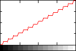 |
{kind=link}
| 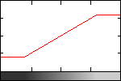 |
{kind=link}
{kind=link}
|
{kind=link}
Clamp to Enforcing image bounds in HDRI
You can force HDRI image to be 'clipped' by the normal image value range by using "-clamp"
between the two level options. For example...
|
![[IM Output]](level_hdri_clamp_pf.gif)
|
-clamp" in
the above basically generated the same image as what I would have got with
a normal non-HDRI version of ImageMagick.
However this image would not be exactly the same as a non-HDRI result, as
while "-clamp" will burn
and clip the values in the image, it does not add quantum rounding effects. As
such the values are only being rounded off to integers during the final save
to a non-HDRI image file format.
The "-clamp" option can
be vitally important when using HDRI, to achieve the result you are wanting.
HDRI File Formats
Of course saving an image that contains very small, large or negative values into a normal image file format will also be clipped, quantized, and even color reduced, for the same reasons as above. As such if you need to save images that have not been 'normalized' back into a 0 to 'Quantum Range' scale, then you will need to use one of the rare floating point image file formats. Some image formats that can handle floating point values (without clipping or rounding) include, NetPBM PFM. This is the only image file format that does not require any extra special options.Other image file formats can also be used, but require a special switch to specify that the file is to save floating point values. Specifically you need to specify the coder option "
-define
quantum:format=floating-point" to request floating point values in
these file formats.
The "-depth" setting can also be used to define what type of
floating point values are used. If "-depth 32" or less (the
default in most versions of IM) is used then normal "floats" are used. But if
"-depth 64" is set then "doubles" are used for the floating point
data written to, or read from, the image file format.
The image file formats that can use with this special flag to save floating
point values include... TIFF, FITS, and MIFF. The raw data file format RGB will also save (and read) floating point,
though that format does not save image size, and you need to specify the
floating point settings for reading too.
Another special coder option is is "
-define
quantum:scale=65535.0". This will be multiplied with value read from
the image file, so as to scale the value from a normalized floating point
value of 0.0 to 1.0, into the internal value range of 0.0 to 65535.0. So if
you get a near pure black image when reading a floating point image, try
adding this option to scale the values being read into the appropriate range.
The direct memory-to-disk file format MPC, will also save floating point values used by a HDRI version of IM, and will not need any special flags. But as with any MPC image file, only the exact same version (specific compilation) of IM on the same machine will correctly read such a file. As such it is only good for temporary 'quick read' files for scripted image processing, and not for long term storage.
What Q-level should I use
In summery what type of ImageMagick should I use? Q8, Q16, HDRI? Q8 has a smaller memory foot print, as image values are saved in memory as 8 bit values, just like most image file formats. For basic composition, image format conversion, simple 'once off resize', or drawing on images, then Q8 is 'good enough'. Q16 doubles the memory foot print as color values are saved in 16 bit values (higher precision). But if you plan on doing heavy image processing involving many levels of operations, such as 'color space changed (even just sRGB to/from RGB), resize, distortions, blurring, shadows, etc etc all to the same image, in the same command (which is recommended for the same reason), then having 16bit is better as it will preserves the lower precision of the images between processing steps. You can also then save in 16bit file formats (PNG, MIFF, PbmPlus) between commands, even if the final save is back to a 8bit image file format like ICO and JPEG. (This is the default for this reason) The next level is Q16 HDRI, that takes precision to 32 bit floating point values which allows you to deal with image values that become very small or very large without the rounding and clipping effects of images. You can even deal with negative values, especially in some colorspaces. Essentially it is used to prevent image data loss when processing images in extremes such as when using HDRI images, Fourier Transforms, or just high levels of compression, expansion you may get in mathematical processing of raw data. That is it in a nut shell. Q16 is good middle ground for most operations involving distortions and multi-image compositions and image processing effects. Q8 if memory is tight but you are only doing simple operations, HDRI is you are doing extreme operations.Image Density or Resolution
The Density of an image is the spatial (space) resolution of the image. That is the density (generally expressed as dpi, or dots per inch) of an image define how far apart (or how big) the individual pixels, and thus the overall size of the image in real world terms, and generally used for display or printing of the image on a real world device. It is just some number stored with the image to tell output devices such as printers and displays how many dots (or pixels) per inch the image should be displayed at, OR for vector formats like postscript, PDF, MWF, and SVG the pixel scale to draw using any real world coordinates that may be used within the image. It is completely irrelevant to the actual images pixel size, or the in-memory Quality and save file format Depth that defines the color 'resolution' of the image. You can set the resolution or density of an image as it is being read into IM by using the "-density"
function, before reading or writing the image, or using "-set density" after reading the
image.
A "-units" setting can be
used to define if the density number is expressed in the default (traditional
printing) terms of 'PixelsPerInch' or in more modern metric units
of 'PixelsPerCentimeter' (PNG uses the latter).
For example, a 200x200 pixel image at 600 dpi will thus be displayed in 1/3
inch square in real world terms. On the other hand a much smaller 72x72 pixel
image at 72 dpi will display in a 1 inch square, in the real world, though its
spatial quality will not be very good in comparison. The former being 'photo
quality' while the later being 'display resolution'.
In practical terms, a 72dpi image will look 'digital' or 'dotty' on a printer.
On the other hand a large modern digital photo taken at 1200dpi image would
probably need to be resampled to show it on
a display, or you may only see tiny part of the image.
For more information on Resolution and Density of images see the notes on the
Resample Resize Operator. For information
of Resolution and Density for Text and Fonts see Pointsize and Actual Font Size.
Photoshop and Density
The "Photoshop" image editor saves an extra copy of the images resolution into a separate profile (named '8BIM') in the image, which IM will NOT
touch. Thus if you change the resolution of an image with IM, you probably
should also strip the profiles from the image before loading it back into
"photoshop", or you may not see any density changes.
You can remove just that profile from an image using "+profile
8bim".
From a IM Forum
Discussion, Jesper Nilsson (aka stroker), suggests that you use the program "exiftool' to
directly modify the Photoshop Tags of the image.
For example
exiftool -g -Photoshop:XResolution=300 -Photoshop:YResolution=300 file.tif |
Speed Tests based on Quality
Some speed tests were submitted to IM Forum, Q8 vs. Q16 speed (& HDRI). Rough results from the above article- The amount of memory used per pixel per channel is as you would expect. Q8 - 1 byte, Q16 - 2 bytes, Q32 & any HDRI - 4 bytes, Q64 (HDRI) - 8 bytes.
- 64bit has significant precision improvements for floating point operations, but so does any other HDRI version of ImageMagick.
- Speed wise Q8, Q16 and HDRI all about the same speed (presuming computer has floating point MPU), Q32 about 25% slower and Q64 (HDRI) is about 50% slower.
| Note that Q64 automatically uses "double long floats", rather than 64 bit integers. It is sort of a double precision HDRI, but while very precise is the slowest of all in-memory quality settings, and most memory intensive. |
| The actual speed will depend on your computer specifications, and if you have a Math Co-Processor or not. If it is not important using the default Q16, or standard HDRI, is probably best. If it is important then you should do simular tests for speed, on your equipment, but using the operations you typically expect to use in your image processing. |
ImageMagick Special Controls
IM also has a few special options that it uses to control its operational working, information reporting, and for debugging purposes.| -version | Output what version of IM, the image quality it is using,
and when was it built.
IM will implicitly exit after outputting this information.
| ||||||||||||||||||||||||||
| -list | This is an informational option only and will list the requested
items, then exit. That is you can not use this with any other
option, or image processing. It is purely provides for
informational purposes, especially in scripts to check input
options and if IM has certain options implemented.
The given argument defines what information you are wanting to list. For
example a list of 'color' names that you can use, (such as
using by ("-fill",
"-background",
"-mattecolor",
"-bordercolor"). While 'font' lists the fonts
that are specifically known to IM.
Here are just some of the more interesting lists...
Configure' is very important, as it
will tell you what libraries, and delegates were available when IM was
built. It also includes the 'point' release number, which was missing
from the normal "-version" output of older versions. (See Script Version Handling for one example of
using this information.
IM will implicitly exit after outputting this information.
| ||||||||||||||||||||||||||
| -verbose | Report extra info on some of the more complex operations.
For example " -segment", which outputs a lot of color quantization details.
And " -distort",
outputting extra information and 'FX' equivalents to the requested image
distortion. Also monitoring the number of changes when iterating
a "-morphology"
operation.
This is especially useful for generating for more detailed image
information from the "info:"
and "-identify"
outputs.
You can turn off the setting using the 'plus' form of the option,
"+verbose".
| ||||||||||||||||||||||||||
|
-regard -warnings |
The '-regard-warnings', will make some informative warnings
about some image file formats fatal. It also causes IM to return a proper
exit status according to such error conditions.
It can be used in scripts to 'sanitize' image file being provided
from uncontrolled sources. That is this option will make IM fail
and exit, if when the JPEG or TIFF image was not correct, complete or
contained 'unknown' profiles.
| ||||||||||||||||||||||||||
| -precision {number} | Control the number of significant digits.
When IM outputs floating point values in response to various debugging, verbose, or formatting requests, this setting sets how precise you want that output. By default it will limit such numbers to 6 significant digits, but this operator will increase or decrease this default. The default setting of 6 can also be modified using the ' MAGICK_PRECISION'
environment variable.
It affects output from...
| ||||||||||||||||||||||||||
| -quiet | Don't report informational warning messages. Only proper errors
such as I/O errors, or bad options, etc.
This is especially useful for "-crop" or "-trim" and "-layers optimize" which normally report 'missed images'
warnings, when the operator would produce no 'real' image as a result.
This will also quieten the coders of some complex image file formats that
can contain 'unknown chunks' which IM would normally ignore. For example
when IM is reading TIFF images, or strange MPEG (AVI) video formats.
| ||||||||||||||||||||||||||
|
-respect -parenthesis |
Causes parenthesis to not only to save and restore the current image list but also all the current operational settings are saved and restored. Than means that when given, any settings set within parenthesis, will be reset when the parenthesis ends. See the examples in Parenthesis and Settings above. | ||||||||||||||||||||||||||
| -ping | For the "identify" command. IM will try to avoid completely reading and decoding the full image file format for basic information such as the images size. | ||||||||||||||||||||||||||
| -monitor | Report a percentage of processing during each stage of image processing, especially for very large or long image processing tasks. In a lower level API, you would use SetImageInfoProgressMonitor() or SetImageProgressMonitor() | ||||||||||||||||||||||||||
| -debug | Report verbosely exactly what IM is doing, in various areas.
The argument is a comma separated list of options, such as...
-debug" is used
the location of the logging output is controlled by the
"log.xml" file. This is by default set to
"console". To have it save to a file change <log
output="console"/> to <log output="file"/>
For command line and API usage you can also define an environment variable
to set the debug level using actions by IM.
|
Limiting image size (quick note) To prevent excess memory usage, set your memory limit to say 16GB. Now set the disk limit to 4GB. ImageMagick will exit if the disk limit is exceeded, with a "cache resource exhausted" exception.